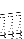

A symmetry analyzer was added in v.3.2 by Andrea Dal Corso.
Other packages that perform symmetry analysis of phnons and normal modes:
ISOTROPY package: http://stokes.byu.edu/iso/isotropy.html
ACKJ, ACMI packages: http://www.cpc.cs.qub.ac.uk.
Because the Acoustic Sum Rule (ASR), i.e. the translational invariance, is violated in approximated calculations. In PW calculations, the main and most irreducible violation comes from the discreteness of the FFT grid. There may be other reasons, though, notably insufficient convergence: "Recently I found that the parameters tr2_ph for the phonons and conv_thr for the groundstate can affect the quality of the phonon calculation, especially the "vanishing" frequencies for molecules." (Info from Katalyn Gaal-Nagy). Anyway: if the nonzero frequencies are small, you can impose the ASR to the dynamical matrix, usually with excellent results.
Nonzero frequencies for rotational modes of a molecule are a fictitious effect of the finite supercell size, or else, of a less than perfect convergence of the geometry of the molecule.
"Negative" frequencies actually are "imaginary" frequencies
(
 < 0
If you want to calculate the contribution of macroscopic electric
fields to phonons - a quantity that is well-defined in insulators
only -- you cannot use smearing in the scf calculation, or else the
code will complain.
You cannot: they are well defined only for insulators.
You cannot: the current implementation is for metals only.
11.8.0.4 Why do I get a message no elec. field with metals?
11.8.0.5 How can I calculate Raman/IR coefficients in metals?
11.8.0.6 How can I calculate the electron-phonon coefficients
in insulators?


Next: About this document ...
Up: 11 Frequently Asked Questions
Previous: 11.7 Self Consistency
Contents
Paolo Giannozzi
2010-05-07